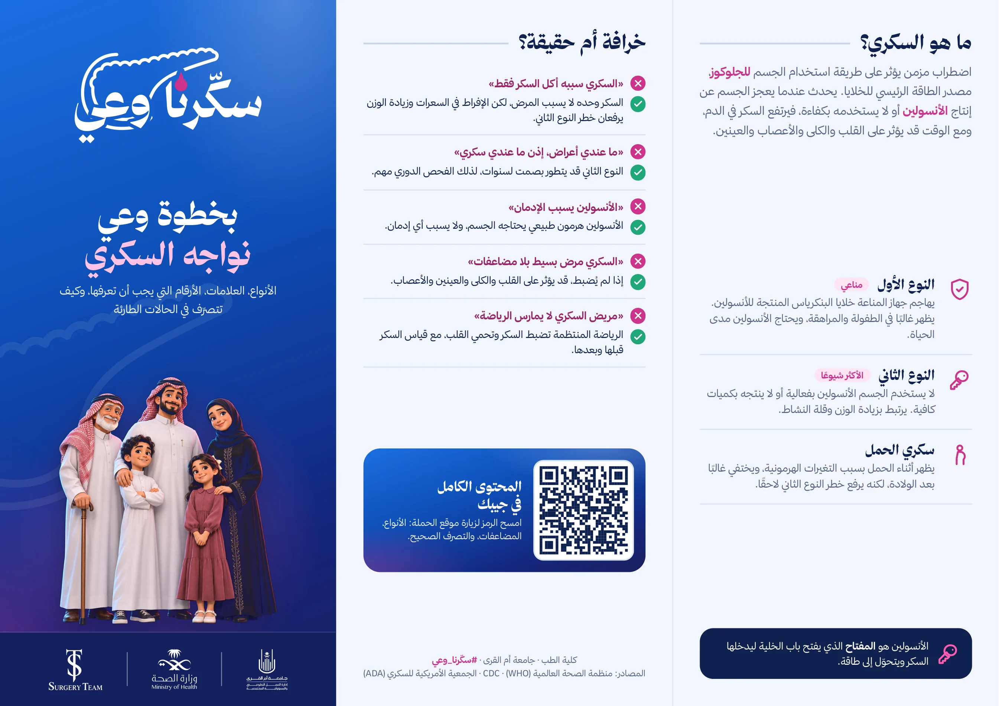
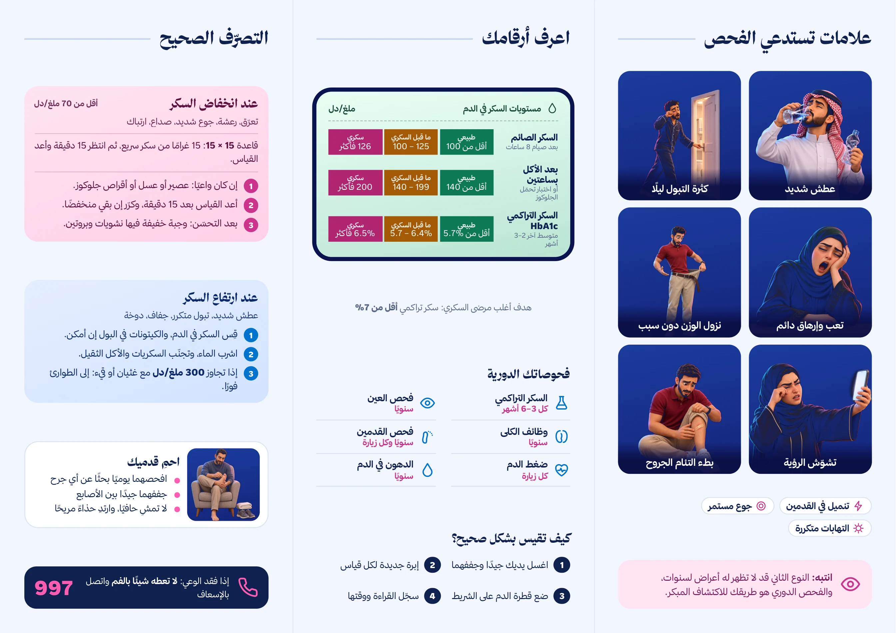

المطوية
في جيبك
أنواع السكري، الأرقام اللي لازم تعرفها، وكيف تتصرف في الحالات الطارئة.
الوجه الأول

اضغط على الصورة لتكبيرها
الوجه الثاني

اضغط على الصورة لتكبيرها
أنواع السكري، الأرقام اللي لازم تعرفها، وكيف تتصرف في الحالات الطارئة.

اضغط على الصورة لتكبيرها

اضغط على الصورة لتكبيرها